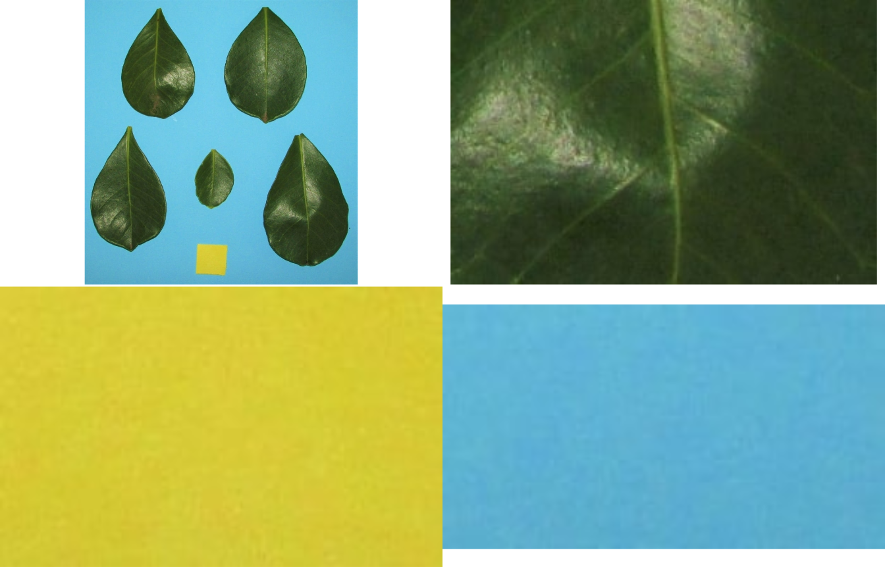
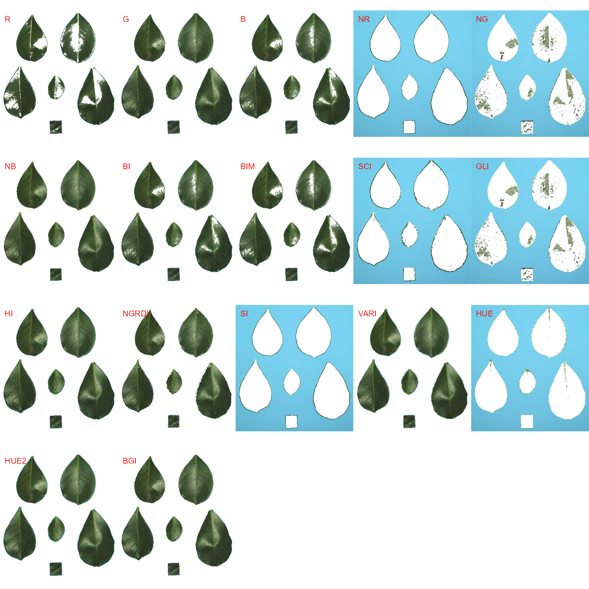
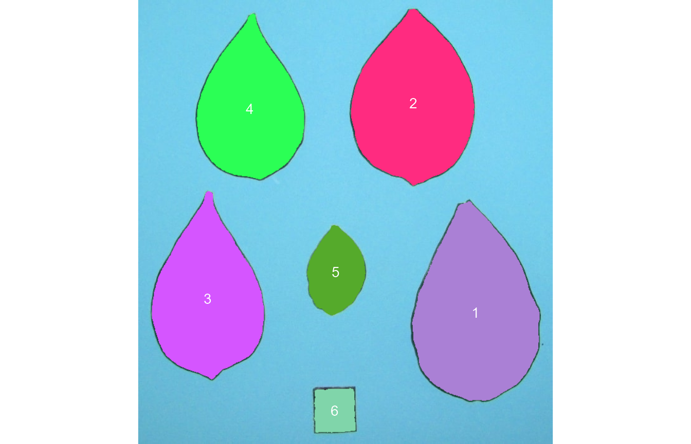
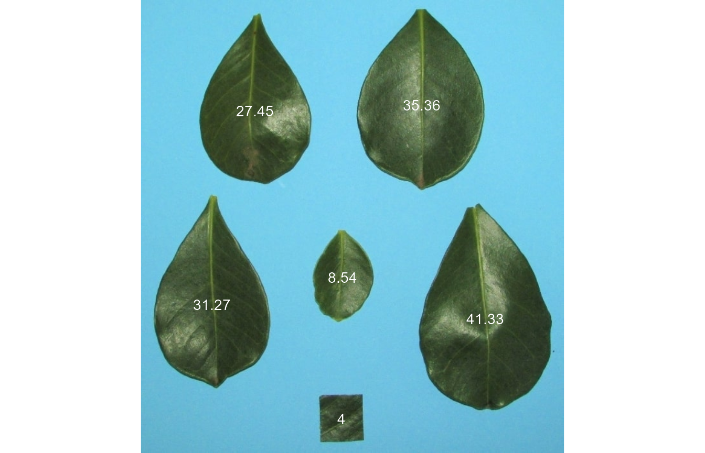

Measure leaf area using leaf images
Tiago Olivoto
2021-05-13
leaf_area.RmdGetting started
Measuring leaf area is a very common task for breeders and agronomists. The leaf area is used as a key trait for computing several indexes, such as the Leaf Area Index (LAI), which quantifies the amount of leaf material in a canopy. In pliman researchers can measure the leaf area using leaf images in two main ways. The first, using leaf_area() uses a sample of leaves along with a template with a known area. Background, leaf, and template color palettes must be declared.
Leaf area using leaf_area()
In this example, an image with five tree leaves and a yellow template with a know area of 4 cm\(^2\) is used.
library(pliman)
#> |========================================================|
#> | Tools for Plant Image Analysis (pliman 0.2.0) |
#> | Author: Tiago Olivoto |
#> | Type 'vignette('pliman_start')' for a short tutorial |
#> | Visit 'https://bit.ly/3eL0dF3' for a complete tutorial |
#> |========================================================|
img <- image_import(image_pliman("la_pattern.JPG"))
leaf <- image_import(image_pliman("la_leaf.jpg"))
tmpl <- image_import(image_pliman("la_temp.jpg"))
background <- image_import(image_pliman("la_back.jpg"))
# Combine the images
image_combine(img, leaf, tmpl, background)
To compute the leaf area in the image, the following function is used. Then, get_measures() is used to get the values given in the scale of area_template argument. The other measures (namely, perimeter, radius_mean, radius_min, and radius_max) are given as pixels.
area <-
leaf_area(img = img,
img_leaf = leaf,
img_template = tmpl,
img_background = background,
area_template = 4,
text_col = "white")
get_measures(area)
#> -----------------------------------------
#> Total leaf area : 142.8
#> Average leaf area: 23.8
#> -----------------------------------------
#> id x y area perimeter radius_mean radius_min radius_max
#> 1 1 510.8478 194.8216 33.644584 749 130.9455 113.18159 174.54500
#> 2 2 206.7227 201.3720 27.038619 708 119.3526 93.15962 170.58657
#> 3 3 123.4080 557.3564 30.671272 787 128.7320 95.71197 189.29962
#> 4 4 622.9545 585.4018 39.365149 863 143.3932 108.19518 202.83133
#> 5 5 364.7726 508.5683 8.080377 377 64.3263 51.48042 86.21891Leaf area using count_objects()
An alternative way to compute leaf area in pliman is by using count_objects(). This function has the advantage of using image segmentation based on several indexes (e.g., red, green, and blue values). So, sample palettes don’t need to be informed. Let us compute the leaf area of leaves with this approach. First, we use image_segmentation() to identify candidate indexes to segment the image.
leaves <- image_import(image_pliman("la_leaves.JPG"))
image_show(leaves)
image_segment(leaves, index = "all")
G (Green) and NB (Normalized Blue) are two possible candidates to segment the leaves from the background. We will use the NB index here (default option in count_objects()). The measurement of the leaf area in this approach is given with the following two steps.
- Count the number of objects (leaves in this case)
Here, we need to combine count_objects() and plot_measures() to obtain the identification of each leaf, allowing the further adjustment of the leaf area.
count <- count_objects(leaves)
#>
#> --------------------------------------------
#> Number of objects: 6
#> --------------------------------------------
#> statistics area perimeter
#> min 4332.00 253.0000
#> mean 26704.17 533.5000
#> max 44763.00 727.0000
#> sd 16286.76 197.2265
#> sum 160225.00 3201.0000
plot_measures(count)
- Adjust the leaf area by the area of the known object
The function get_measures() is used to adjust the leaf area using the object 6.
area <-
get_measures(count,
id = 6,
area ~ 4)
#> -----------------------------------------
#> measures corrected with:
#> object id: 6
#> area: 4
#> -----------------------------------------
area
#> id x y area perimeter radius_mean radius_min radius_max
#> 1 1 537.3833 498.9915 41.332410 22.091245 3.678437 2.756046 5.259454
#> 2 2 438.6512 165.2385 35.362881 19.477975 3.370650 2.875019 4.546890
#> 3 3 110.8785 477.0276 31.268698 20.116099 3.268759 2.374700 4.856987
#> 4 4 178.4196 174.2348 27.445983 18.201727 3.027071 2.307497 4.394600
#> 5 5 315.2358 434.6106 8.535549 9.693407 1.655947 1.311698 2.253471
#> 6 6 313.4910 655.2052 4.000000 7.687875 1.125488 0.926436 1.378890
image_show(leaves)
plot_measures(area, measure = "area")
# compute the difference between the two methods
142.9 -(sum(area$area) - 4)
#> [1] -1.045522The weakness of computing leaf area with count_objects() is that it is needed to first obtain the object identification to know which object (leaf) is the sample with a known area. This object id may change from image to image, especially from images with a different number of leaves. Thus, batch computing is difficult in this case.